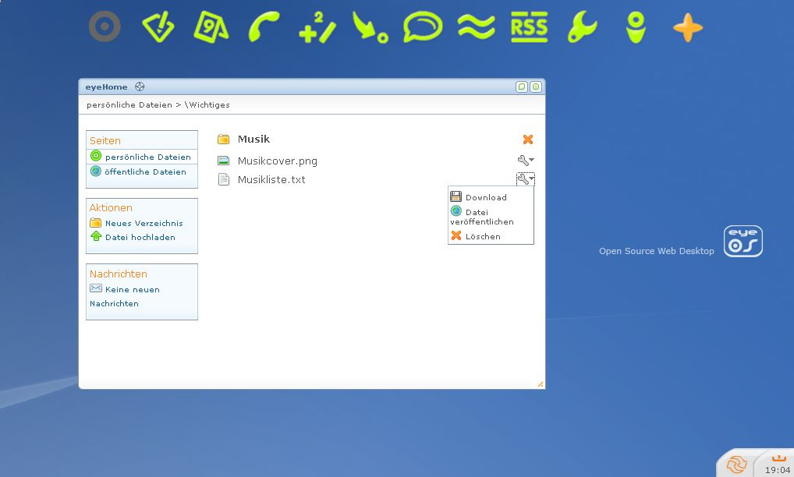
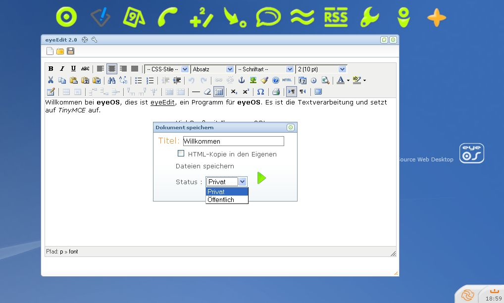

eyeOS
Use eyeOS as a real main-system. But eyeOS can be used in a browser. So you can start it from each and every PC with internet.
{kind=link}
new account
For the first time on eyeOS, you have to create your own account. Try a username, a password and your e-mail-account.
Some times you also have to validate your account.
{kind=link}
eyeOS-desktop
That's the eyeOS-desktop. Use your mouse on a picture in top of the page, to show the name of the buttons program (e.g.: eyeHome). This list shows you eyeOS-programs and there functions:
| eyeHome | The central of your eyeOS and for your files. |
|  | |
| eyeEdit | Use a very good text-editor! |
|  | |
| eyeCalendar | Calendar |
| eyePhones | Saves data from other persons (e.g.: phone-numbers) |
| eyeCalc | Calculator |
| eyeMessages | Write messages for other eyeOS-users |
| eyeBoard | Chat |
| eyeNav | Internet-browser |
| eyeRSS | RSS Feed program |
| eyeOptions | eyeOS-system-options |
| eyeInfo | You can see Informations about eyeOS. |
| eyeApps | For all programs |
{kind=link}
{kind=link}
{kind=link}
windows
EyeOS uses windows.
On the top of the window you can find the title. Near the title can be two buttons:
 - help
- help - settings
- settingsOn the right side you can also find buttons:
 - maximize the window
- maximize the window - close the window
- close the windowUnder the real window you can find this button:
 . Click here to
change the width and height of a windowby using the mouse.
. Click here to
change the width and height of a windowby using the mouse.